1, Bật nguồn.
Ấn công tắc nguồn sang vị trí “l”.
2, Hơi hạ thấp tụ quang xuống từ vị trí cao nhất.
Xoay núm lấy nét tụ quang để hơi hạ thấp tụ quang từ vị trí cao nhất
3, Mở hoàn toàn màn chắn trường và màn chắn khẩu độ tụ quang
(Điều chỉnh màn chắn trường chỉ dành cho kính hiển vi có màn chắn trường)
Xoay vòng màn chắn trường sang vị trí giới hạn trái để mở hoàn toàn màn chắn trường.
Xoay gạt màn chắn khẩu độ tụ quang sang vị trí giới hạn trái để mở hoàn toàn màn chắn.
4, Chuyển vật kính 10× vào đường quang.
Xoay mâm vật kính để chuyển vật kính 10x vào đường quang.
5, Đặt lam mẫu lên bàn di mẫu và điều chỉnh mẫu vào trong
đường quang.
Xoay núm di chuyển bàn di mẫu để chuyển mẫu vào đường quang.
6, Lấy nét cho mẫu.
Xoay núm chỉnh tiêu cự để lấy nét cho mẫu.
7, Điều chỉnh diop.
Xoay vòng diop trên thị kính.
8, Điều chỉnh khoảng cách 2 mắt.
Hợp nhất khoảng cách giữa 2 thị kính với khoảng cách giữa 2 mắt của bạn.
9, Lấy nét và chỉnh tâm cho màn chắn trường
(Điều chỉnh này chỉ dành cho KHV có màn chắn trường.)
Sử dụng núm lấy nét tụ quang, vòng xoay màn chắn trường và ốc lấy tâm màn chắn trường cho
bước điều chỉnh này.
10, Lựa chọn vật kính.
Xoay mâm vật kính sang vật kính có độ phóng đại mong muốn.
11, Điều chỉnh màn chắn khẩu độ tụ quang.
Xoay gạt màn chắn khẩu độ tụ quang sang vị trí có đánh dấu độ phóng đại giống như của
vật kính đang đặt trong đường quang.
12, Lấy nét cho mẫu.
Vặn núm điều chỉnh độ sáng để chỉnh độ sáng của trường nhìn và lấy nét cho mẫu với
núm chỉnh tiêu cự.
13, Điều chỉnh màn chắn trường. (Điều chỉnh này chỉ dành cho KHV có
màn chắn trường.)
Xoay vòng màn chắn trường đến khi ảnh màn chắn ngoại tiếp trường quan sát.
14, Tiến hành quan sát mẫu.
Mỗi khi đổi vật kính, điều chỉnh màn chắn khẩu độ và màn chắn trường.
15, Tắt công tắc nguồn.
Ấn công tắc sang vị trí “○” .
1,Bật công tắc nguồn.
Ấn công tắc sang vị trí “l” và đèn sẽ sáng.
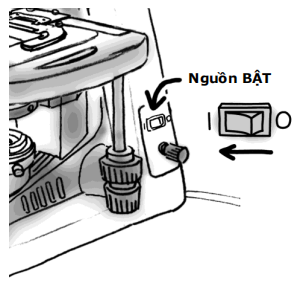
2, Hơi hạ thấp tụ quang từ vị trí cao nhất.
Xoay núm lấy nét tụ quang để nâng tụ quang lên
vị trí cao nhất và sau đó hơi hạ thấp tụ quang
xuống.
Chú ý: Tụ quang sẽ kêu cạch khi tới giới hạn cao
nhất.
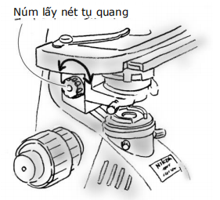
3, Mở hoàn toàn màn chắn trường và màn chắn khẩu
độ tụ quang
(Điều chỉnh màn chắn trường chỉ dành cho kính hiển vi có màn chắn trường.)
(1) Xoay vòng màn chắn trường sang vị trí
giới hạn trái để mở hoàn toàn màn chắn
trường.
(2) Xoay gạt màn chắn khẩu độ tụ quang
sang vị trí giới hạn trái để mở hoàn
toàn màn chắn.
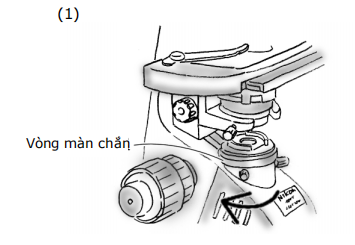
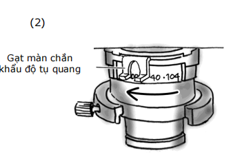
4, Chuyển vật kính 10x vào đường
quang.
Xoay mâm vật kính để chuyển vật kính 10x vào
đường quang.. Vật kính sẽ tạo ra tiếng cạch khi được xoay vào vị
trí.
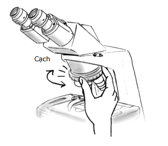
5, Đặt lam mẫu lên bàn di mẫu và điều chỉnh mẫu vào trong
đường quang.
(1) Đặt lam mẫu lên bàn di mẫu với mặt la
men hướng lên trên.
(2) Mở kẹp giữ mẫu và cố định mẫu bằng
kẹp.
(3) Xoay núm di chuyển bàn di mẫu (trục Y
và X) để đặt mẫu vào đường quang.
Ánh sáng từ nguồn sáng sẽ đi qua mẫu.
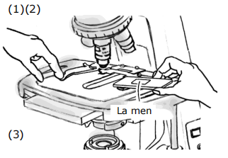
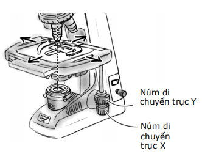
6, Lấy nét cho mẫu.
(1) Xoay núm chỉnh thô để nâng bàn di
mẫu lên vị trí cao nhất.
Không vặn núm chỉnh thô thêm khi
bàn di mẫu đã đạt vị trí cao nhất.
Việc này sẽ làm hỏng cơ chế chỉnh
tiêu cự
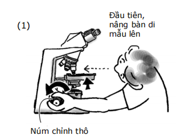
(2) Nhìn vào thị kính với mắt trái hoặc phải,
điều chỉnh độ sáng của trường nhìn bằng
cách vặn núm chỉnh sáng.
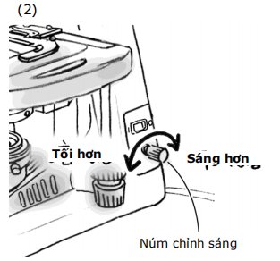
(3) Nhìn vào thị kính, xoay từ từ núm chỉnh
thô để hạ thấp bàn di mẫu. Khi ảnh của
mẫu xuất hiện, dừng xoay núm.
Không vặn núm chỉnh thô thêm khi bàn di
mẫu đã đạt vị trí giới hạn dưới. Việc này sẽ
làm hỏng cơ chế chỉnh tiêu cự.
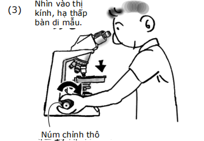
(4) Vặn núm chỉnh tinh và lấy nét chính xác
cho ảnh.
Không vặn núm chỉnh tiêu cự bên trái và
phải đồng thời theo chiều ngược nhau.
Việc này sẽ làm hỏng cơ chế lấy tiêu cự.
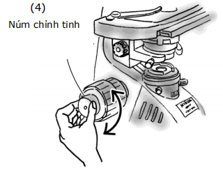
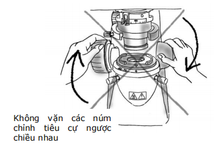
7,Điều chỉnh vòng diop trên thị
kính.
Quy trình này là để điều chỉnh vòng diop trên thị
kính theo sự khác nhau giữa mắt trái và phải của
bạn.
(1) Xoay vòng diop trên thị kính trái và phải
để khớp rìa đáy của nó với đường khắc cơ
sở. Đây là vị trí tiêu chuẩn cho điều chỉnh
diop.
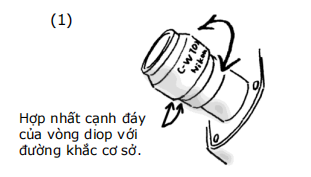
(2) Chuyển vật kính 40x vào đường
quang, lấy nét cho mẫu bằng núm
chỉnh tiêu cự.
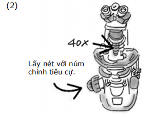
(3) Chuyển trở lại vật kính 10x hoặc 4x.
(4) Khi nhìn vào vào thị kính phải với mắt
phải, lấy nét cho mẫu bằng cách xoay
vòng diop mà không sử dụng núm
chỉnh tiêu cự.
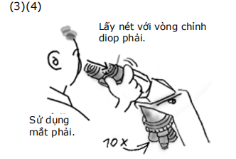
(5) Khi nhìn vào vào thị kính trái với mắt
trái, lấy nét cho mẫu bằng cách xoay
vòng diop mà không sử dụng núm chỉnh
tiêu cự.
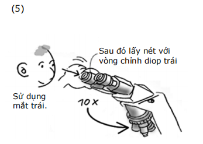
(6) Lặp lại bước 2 đến 5 để kiểm tra
mẫu đã được lấy nét.
8, Điều chỉnh khoảng cách 2 mắt.
Nhìn qua thị kính, nhập trường nhìn bên trái và
phải thành một bằng cách xoay đầu 2 mắt. Nhìn
vào thị kính như thể bạn đang nhìn xa và bạn có
thể dễ dàng khớp trường nhìn với nhau.
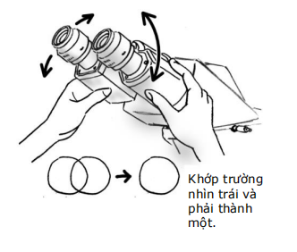
9,Lấy nét cho màn chắn trường và
chỉnh tâm.
(1) Chuyển vật kính 10x hoặc 4x vào
đường quang. Xoay vòng màn chắn
trường sang vị trí giới hạn dưới để
đóng màn chắn.
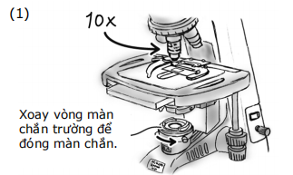
(2) Trong khi nhìn vào thị kính, xoay núm
lấy nét tụ quang để ảnh màn chắn trở
nên rõ.
(3) Vặn ốc lấy tâm màn chắn trường cho đến
khi ảnh màn chắn nằm ở trung tâm
trường nhìn.
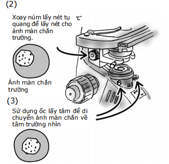
(4) Chuyển sang vật kính 40x. Nếu vùng
rìềm ảnh mờ, xoay núm lấy nét tụ quang
để thu được vị trí lấy nét tốt nhất.
(5) Vặn vòng màn chắn trường sao cho ảnh
màn chắn trường có kích thước gần như
trường quan sát.
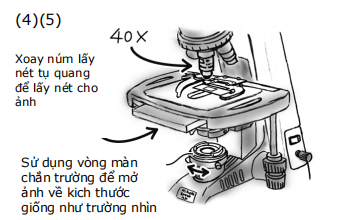
(6) Nếu ảnh màn chắn chưa ở trung
tâm, sử dụng ốc lấy tâm để chỉnh
lại.
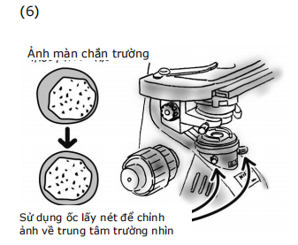
10, Chọn vật kính.
Xoay mâm vật kính sang vật kính có độ
phóng đại mong muốn.
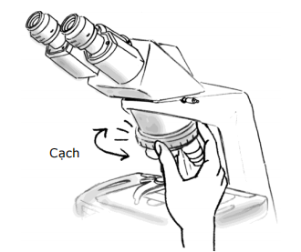
11,Điều chỉnh màn chắn khẩu độ tụ quang.
Xoay gạt màn chắn khẩu độ tụ quang sang vị trí có
đánh dấu độ phóng đại giống như của vật kính đang
đặt trong đường quang.
Mỗi khi thay đổi độ phóng đại vật kính, khớp độ mở
màn chắn đến vị trí đánh d ấu độ phóng đại của vật
kính đang dùng.
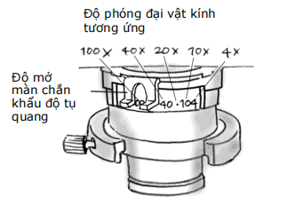
12, Lấy nét cho mẫu.
(1) Nhìn vào thị kính, xoay núm chỉnh
sáng để điều chỉnh độ sáng của
trường nhìn.
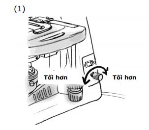
(2) Nếu mẫu nằm ngoài vùng lấy nét, xoay
núm chỉnh tiêu cự để lấy nét cho mẫu.
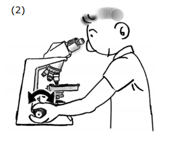
1. Khi xoay núm chỉnh thô trong khi nhìn vào
thị kính, đảm bảo chỉ xoay theo chiều hạ
thấp bàn di mẫu.
2. Khi nâng bàn di mẫu sử dụng núm chỉnh thô,
rời mắt khỏi thị kính, nhìn từ phía bên để
quan sát khoảng trống giữa mẫu và phần
đầu thị kính.
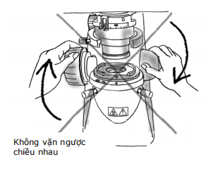
3. Đầu tiên lấy nét với vật kính có độ
phóng đại thấp. Sau đó đổi sang vật
kính có độ phóng đại lớn hơn.
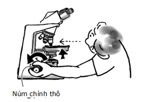
13, Điều chỉnh màn chắn trường.
Nhìn vào thị kính, xoay vòng màn chắn trường
đến khi ảnh màn chắn vừa ngoại tiếp vi trường.
Nhãn trên màn chắn trường đánh dấu vị trí
thích hợp của màn chắn trường tương đương với từng
độ phóng đại của vật kính khi sử dụng thị kính 10x.
Đối với vật kính 100x, màn chắn không thể đóng đủ mức.
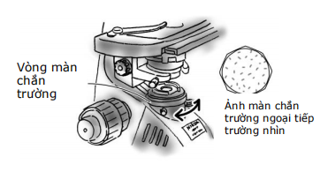
14, Quan sát mẫu.
Xoay núm di chuyển bàn di mẫu để chuyển mẫu
vào đường quang. Nếu mẫu nằm ngoài vùng lấy
nét, xoay núm chỉnh tiêu cự để lấy nét cho mẫu.
Đổi vật kính hoặc mẫu và lặp lại bước 10 đến 14.
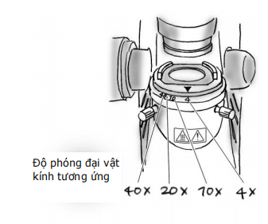
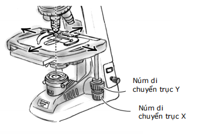
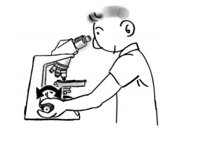